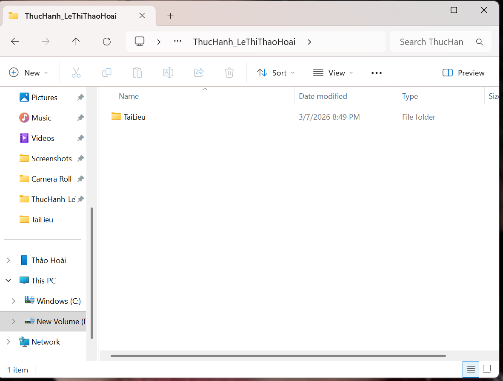
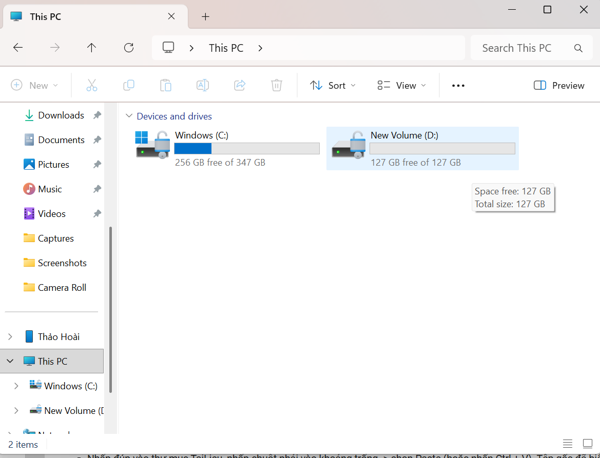
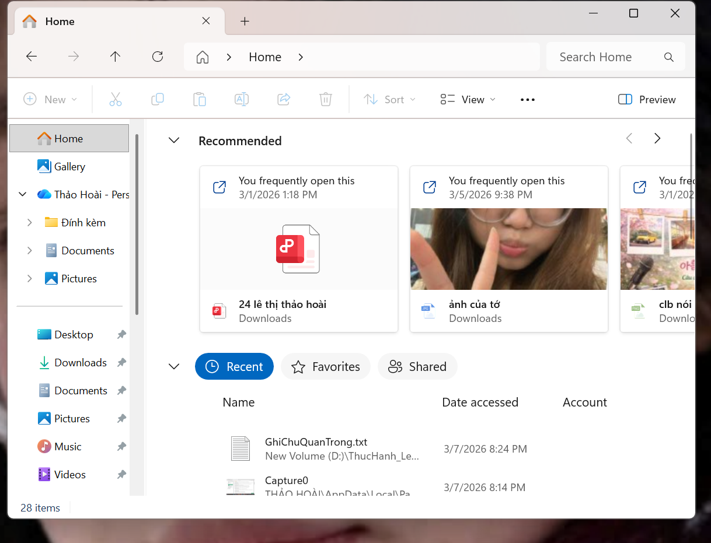
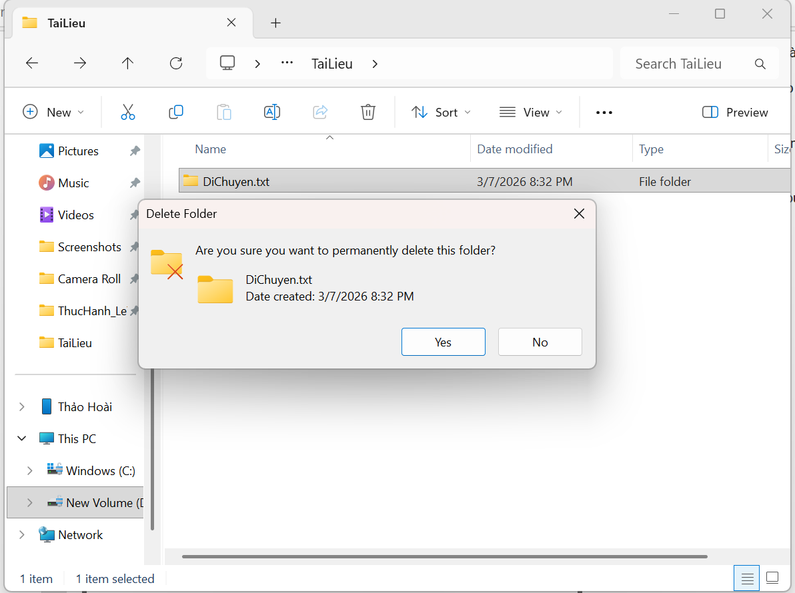
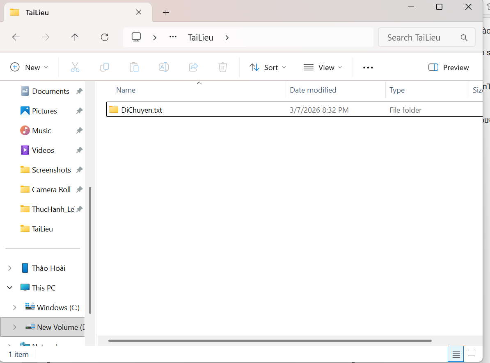
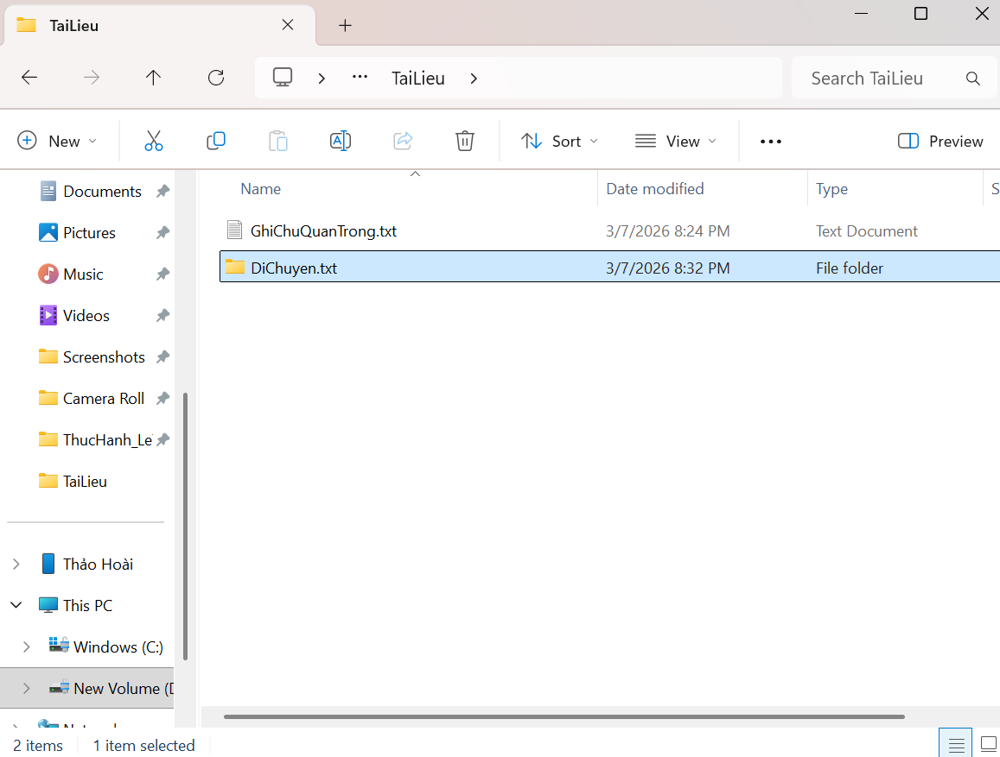
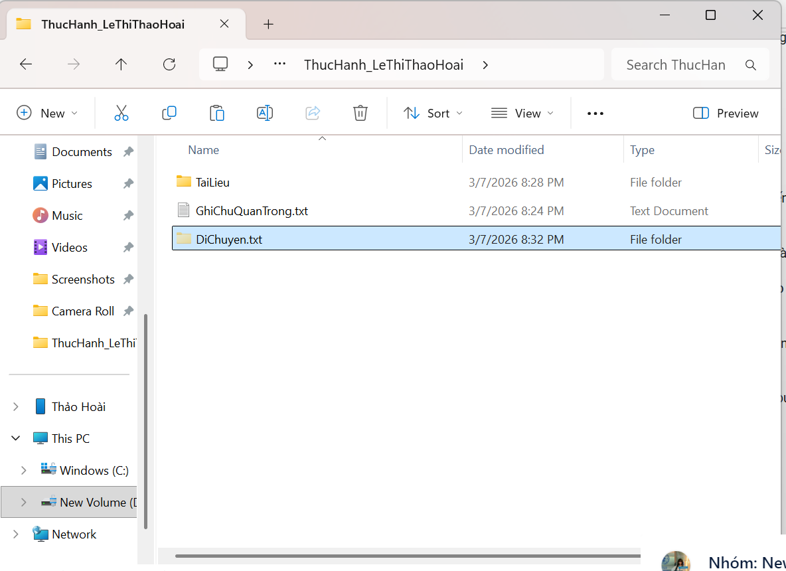
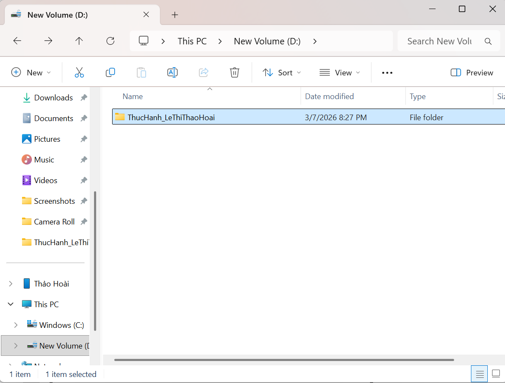
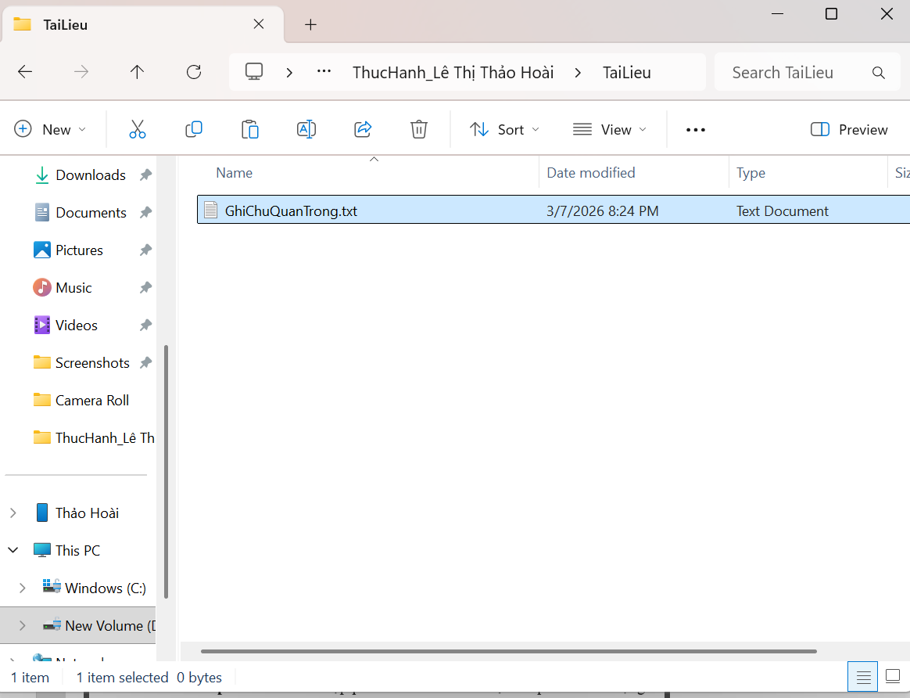

TỔNG QUAN
Mục tiêu thực hành
Bài tập tập trung vào kỹ năng thao tác cơ bản với tệp tin và thư mục trên hệ điều hành Windows: tạo mới, đổi tên, di chuyển, sao chép, xóa và kiểm tra kết quả sau cùng. Cách trình bày dưới đây được sắp xếp theo đúng logic thao tác: mỗi bước có phần mô tả ngắn gọn và ảnh minh chứng đi kèm ngay phía dưới/đi bên cạnh để dễ theo dõi.
THEO TRÌNH TỰ THAO TÁC
Quy trình thực hiện và minh chứng
Mở File Explorer
Nhấn tổ hợp phím Windows + E hoặc chọn biểu tượng thư mục trên thanh tác vụ để bắt đầu thao tác.

Truy cập ổ đĩa hoặc thư mục làm việc
Tại cột điều hướng bên trái, chọn This PC rồi mở ổ đĩa D: (hoặc Documents nếu máy chỉ có ổ C:).

Tạo thư mục thực hành
Tạo thư mục mới với tên ThucHanh_LeThiThaoHoai để lưu các tệp và thư mục con của bài thực hành.

Tạo thư mục con TaiLieu
Mở thư mục vừa tạo và tạo thêm thư mục con TaiLieu để chứa các tệp dùng trong bài.

Tạo và kiểm tra tệp cần xóa
Tạo tệp hoặc thư mục theo yêu cầu rồi thực hiện thao tác xóa để hệ thống hiển thị hộp thoại xác nhận.

Hủy thao tác xóa
Chọn No để hủy thao tác xóa; tệp hoặc thư mục vẫn được giữ nguyên trong TaiLieu.

Tạo tệp văn bản quan trọng
Tạo tệp GhiChuQuanTrong.txt để tiếp tục thực hành với thao tác sao chép, di chuyển và kiểm tra.

Di chuyển tệp
Di chuyển DiChuyen.txt từ thư mục TaiLieu ra thư mục chính để phân biệt rõ thao tác move.

Kiểm tra cấu trúc thư mục
Quay lại ổ D: để kiểm tra thư mục ThucHanh_LeThiThaoHoai đã được tạo đúng vị trí.

Kiểm tra kết quả cuối cùng
Mở lại thư mục TaiLieu để xác nhận nội dung còn lại sau khi tạo, di chuyển và xử lý tệp.

KẾT LUẬN
Kết quả đạt được
Thư mục ThucHanh_LeThiThaoHoai và thư mục con TaiLieu được tạo đúng vị trí; các thao tác xóa, hủy xóa và di chuyển được minh chứng rõ bằng ảnh chụp màn hình.